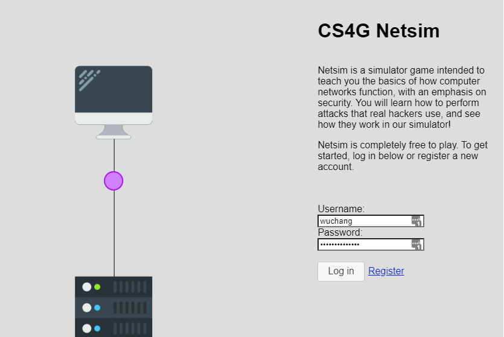

In this lab, we'll examine the ARP on a linux server. ssh into linux.cs.pdx.edu.
Use the ip address command to find the IPv4 address and hardware address of the local ethernet card interface (Typically beginning with eth, ens, or enp).
Perform a netstat -rn to list the route table for the machine.
Perform an arp command (both with and without the -n flag) on the IP address of the router.
Next, we'll examine the ARP table on the server. Perform the command below to list the entire table.
arp -aAs the output shows, there are a number of machines directly connected to this server. The command outputs the DNS name, the IP address, and the hardware address of each. We can pipe the output of the command to wc -l to determine the number of entries in the table.
arp -a | wc -lIt is possible to assign multiple IP addresses to the same network hardware address. In order to see if this is being done for machines on this network, we can sort the output by hardware address. The sort utility with its -k flag can be used to sort the ARP table based on the field number of the output (assuming fields are delimited by spaces). Using the field number of the hardware addresses, output the ARP table sorted by hardware address. For example if the hardware address were field 8, the command would be:
arp -a | sort -k ...We can now use awk and uniq to find the total number of unique hardware addresses in the ARP table. As with sort, awk also utilizes the space delimiter to separate fields. By using uniq to remove duplicates, we can then count the total number of hardware addresses in the ARP table.
arp -a | sort -k ... | awk '{print $...}' | uniq | wc -lWe can also use awk to generate a list of IP addresses with entries in the table. Note that the IP address in the output of the command is enclosed in parentheses. By default, awk uses the space character as a delimiter between output fields. We can use the -F flag of awk to specify alternate characters instead. The flag accepts a regular expression so the following expression -F '[()]' passed to awk instructs it to use either parenthesis character as a delimiter.
Use a single command-line to create a file that contains each IP address that appears in the machine's ARP table and places the results in a file called arp_entries. The command should be similar to the one below:
arp -an | awk -F '...' '{print ...}' > arp_entries
Examine the arp_entries file:
In Cloud Shell, bring up your Ubuntu VM.
gcloud compute instances start <name_of_VM>ssh into the VM and install the net-tools package that includes arp and netstat.
sudo apt update -y sudo apt install net-tools -y
Find the IP address and hardware address of the local ethernet card interface (Typically beginning with eth, ens, or enp).
ip address
Then, examine the route table for the machine.
netstat -rn
Finally, find the hardware address of the default router by using arp to resolve its IP address
arp <IP_address_of_router>

Create an account and complete all levels of Netsim
Upon completion of all levels